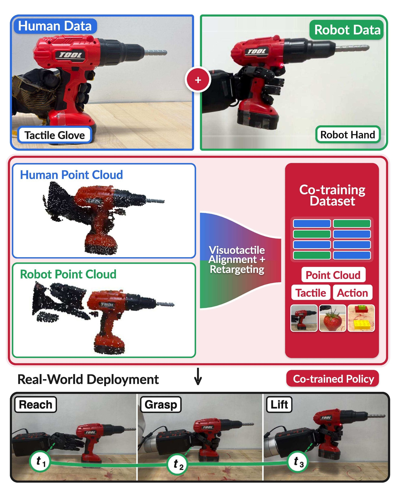
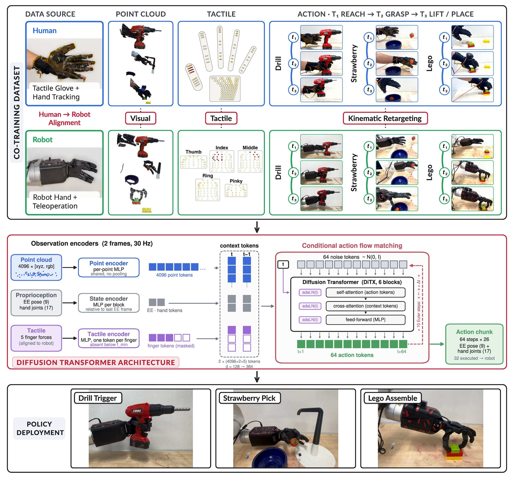
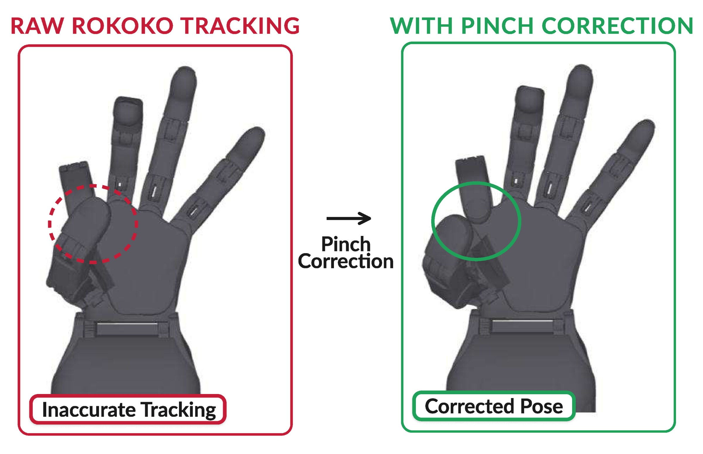
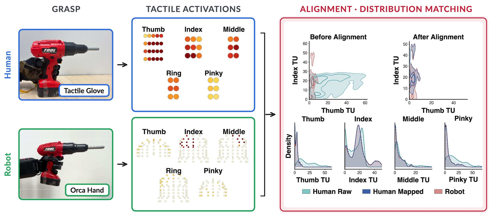
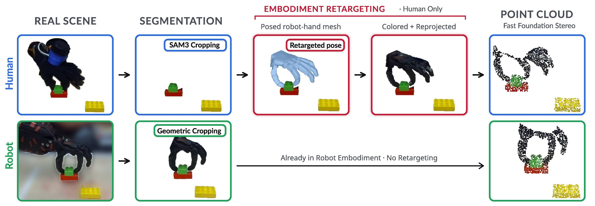
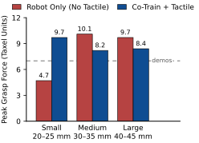
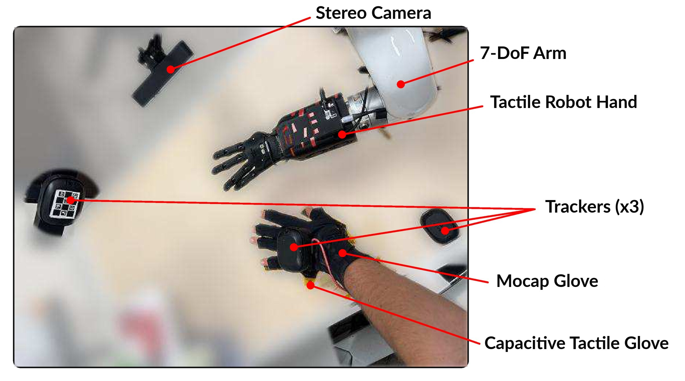

Co-Training Dexterous Policies on Tactile Human and Robot Demonstrations
Under review, ICRA 2027

Human demonstrations are a cheap source of data for dexterous manipulation. But co-training a robot policy on them requires closing the human–robot gap in every modality the policy consumes, not just vision.
VisTacAlign closes that gap in three places at once. Glove-tracked hand motion is retargeted to a 17-DoF tactile robot hand with a one-time fingertip correction. The human hand is erased from both stereo views and replaced by a posed robot-hand mesh painted with pixels from robot recordings, and a real-time stereo foundation model is re-run on the composite, so human point clouds carry the same stereo errors and visibility as robot clouds. A capacitive tactile glove is aligned to the robot's fingertip sensors in its own signal space, giving one interpretable per-finger force representation.
A diffusion transformer consumes point-cloud, proprioceptive and per-finger tactile tokens. On three real-world tasks that require precise force, adding aligned human demonstrations to existing robot data improves over robot-only policies.
The framework has four components. The first three erase a different part of the embodiment gap. The fourth consumes the result.
Glove hand poses mapped to the robot hand, with a learned fingertip correction calibrated once against a headset as pseudo ground truth.
A static map carries human glove forces into the robot's own taxel units, fitted from unpaired demonstrations.
The human hand is removed and a robot-textured mesh is composited back into both stereo views, then stereo is re-run.
A 23.5M-parameter policy over point-cloud, proprioceptive and tactile tokens, trained with consistency flow matching.

Motion-capture gloves report fingertip positions with centimetre errors in pinch grasps, caused by hand-size variation and the glove's assumed skeleton. On a real robot that is the difference between a grasp and a miss. We calibrate once against a headset's hand tracker, fitting a small network that nudges each joint by at most 20° while keeping bone lengths fixed.
| Metric | Raw glove | Corrected |
|---|---|---|
| Median fingertip error | 13.7 mm | 7.1 mm |
| Thumb–index error at pinches | 11.8 mm | 3.4 mm |

The two sensors have nothing in common. The human wears a capacitive glove with 202 normal-force taxels at 60 Hz. The robot has Hall-effect fingertip arrays with 363 three-axis taxels. They differ in layout, gain, saturation and contact geometry. A policy trained on the naively pooled data would see two unrelated force scales and could not exploit touch at all.
Both sides are first reduced to one scalar per fingertip. We then fit a static map that carries the human distribution onto the robot's, matching both the total load and how that load is shared between fingers. It is fitted once per task from unpaired frames, has a single hyperparameter, and is applied to the human dataset when it is built. Robot data and the deployed policy are never transformed.
Because every output is an average of robot samples, the mapped signal is still a force in the robot's own taxel units. It maps the absence of contact to zero and can never leave the robot's force range.

We check it directly against the robot distribution with standard two-sample statistics, on held-out episodes with the map refitted per fold. This is possible precisely because the alignment lives in signal space rather than a learned latent space.
| Measure | Before | After |
|---|---|---|
| KS distance to robot marginal (thumb) | 0.33 | 0.08 |
| KS distance to robot marginal (index) | 0.42 | 0.08 |
| Human-vs-robot force classifier | 92% | 58% |
Depth alone does not close the gap between the two sources. The robot hand is anthropomorphic, but it still differs from a gloved human hand in size, shape and colour. So we align the human demonstrations to the robot's appearance in 3D before training, and the policy sees the same hand at training time and at deployment.
Both streams are observed by the same stereo camera and lifted with a real-time stereo foundation model. For human demonstrations, every pixel outside the task masks is blanked, including the hand and arm. The robot hand mesh is posed at the tracked wrist, painted with real pixels sampled from robot recordings, composited back into both stereo views, and stereo is run a second time on the composite.

Yes, and it is measurable. Mesh points inserted straight into a real cloud stay separable from sensed points by their surface roughness, because they carry no sensor noise. After the second stereo pass, that signature is nearly gone.
| Measure | Pasted mesh | Composited (ours) |
|---|---|---|
| Separability from sensed points | 0.99 | 0.67–0.76 |
| Measure | Glove cloud | Composited |
|---|---|---|
| Chamfer distance | 13.3 mm | 10.2 mm |
| F-score at 10 mm | 0.40 | 0.59 |
Three real-world tasks, each chosen because success depends on force rather than motion alone. A configuration such as 26H10R means 26 human and 10 robot demonstrations. Human demonstrations are roughly two to three times faster to collect and need no robot at all, only the glove, the wrist tracker and a stereo camera.
The robot must approach a power drill, activate its trigger, and lift it while keeping the trigger held. Every robot demonstration carries tactile data, so even the robot-only policy sees force.
| Demos | Obs. | Human tact. | Approach | Activate | Lift |
|---|---|---|---|---|---|
| 26R | RGB | – | 100 | 35 | 35 |
| 26R | PC | – | 90 | 65 | 50 |
| 26H26R | PC | yes | 80 | 70 | 70 |
| 10R | PC | – | 85 | 65 | 35 |
| 26H10R | PC | no | 95 | 65 | 30 |
| 26H10R | PC | yes | 100 | 55 | 55 |
The comparison that matters is the last three rows. Starting from 10 robot demonstrations, adding 26 touchless human demonstrations drops success from 35% to 30%. Adding the same demonstrations with aligned tactile raises it to 55%. Since 26H10R and 26R cost about the same to collect, the aligned human data is the better use of that time.
The robot must pluck a strawberry held by a magnet, which takes enough force to overcome the magnet without crushing the fruit. Here we co-train on 124 human and 84 robot demonstrations.

| Fruit size | Robot only | Co-train + tactile |
|---|---|---|
| Small (20–25 mm) | 60 | 90 |
| Medium (30–35 mm) | 70 | 80 |
| Large (40–45 mm) | 0 | 70 |
The robot must pick up a brick, align it over a base plate, push until it snaps in, and retreat. This task also isolates the visual alignment: No Rp2d feeds the raw human point cloud instead of the composited one.
| Demos | Tactile | Rp2d | Pickup | Align | Push | Retreat |
|---|---|---|---|---|---|---|
| 30R | yes | – | 70 | 10 | 10 | 10 |
| 50H10R | yes | yes | 90 | 50 | 40 | 40 |
| 50H20R | yes | yes | 60 | 60 | 60 | 60 |
| 50H30R | yes | yes | 100 | 80 | 80 | 80 |
| 50H10R | yes | no | 100 | 50 | 10 | 10 |
| 50H20R | yes | no | 100 | 100 | 30 | 25 |
| 50H30R | no | yes | 70 | 70 | 70 | 70 |
Final success grows with the number of robot demonstrations, from 40% with 10 to 60% with 20 and 80% with 30, against 10% for 30 robot demonstrations alone. Human demonstrations do not replace robot data. They improve what a few robot demonstrations are worth. Without the visual alignment the policy still picks up the brick, but success collapses at the push and retreat stages, where contact matters most.

Three reasons. The aligned quantity is still a per-finger force in the robot's units, so it can be checked directly against the robot distribution with standard statistics, which is exactly what the tables above do. The map is fitted once and deterministically from a few thousand unpaired frames, with one hyperparameter and no encoder to train. And because it is static and acts frame by frame, it cannot shift the timing of contact events.
We do not compare head-to-head against a learned latent alignment. Our case rests on interpretability and on guarantees that hold by construction, and quantifying that trade-off is the most immediate item of future work.
Because a pasted mesh is not a measurement. Its points are noise-free, uniformly dense, and cover surfaces a single-view sensor could never see. A simple roughness test separates them from real sensed points almost perfectly, at 0.99 area under the curve, which means a policy can learn that shortcut too. Running stereo on the composite drops that to 0.67–0.76.
Yes. The tactile map is fitted per task from unpaired force samples, so a short robot recording of the task's contacts is still needed. The result is not that human data replaces robot data, but that it substantially raises what a small number of robot demonstrations is worth.
The tactile map is fitted per task. Reducing a fingertip to one normal force discards the taxel layout and shear, which likely matters for in-hand manipulation and slip. The tasks are short-horizon and largely quasi-static. And we do not compare against alignment in a learned latent space.
The policy has 23.5M parameters. At deployment, stereo runs at 20 Hz, the glove at 60 Hz and the robot taxels at 30 Hz. We sample 10 flow steps and execute the first 32 of a 64-step chunk, about 1.1 seconds, before replanning, which takes 269 ms on a consumer GPU.
That is the clearest single effect. On the strawberry task the robot-only policy under-grips small fruit and over-grips large fruit, and never plucks the largest size. The co-trained policy holds a narrow force band across all three sizes and succeeds on every one. Grasp force is precisely the quantity the tactile alignment transfers from the human hand.